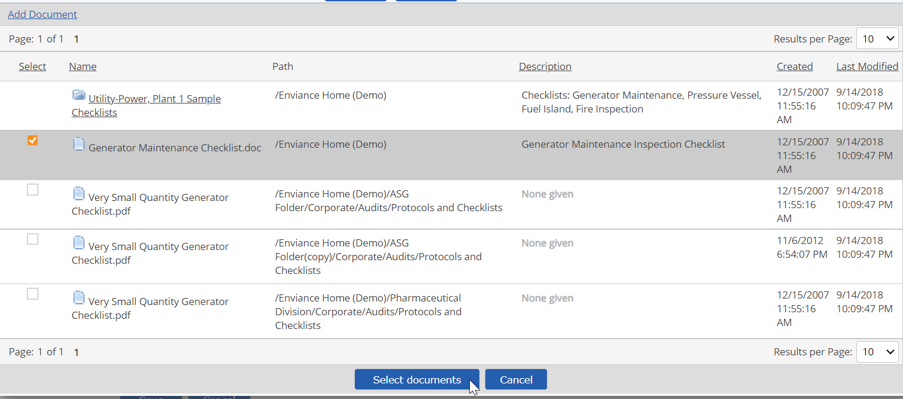
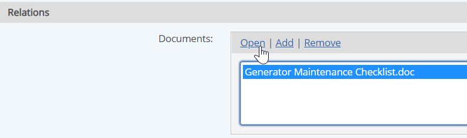

Documents relevant to a task may be associated with the task so that task assignees may view them from the task. Documents may be associated with a task individually or through a Task Template applied to multiple tasks.
Task assignees must have View permission on the document in order to access the document.
Documents to be associated with a talk must first be uploaded to the Documents library in Advanced Calculations (EMS). You must have the appropriate permissions to upload documents and to associate them with tasks.
To associate one or more documents with a task:
In the document selection window, browse the folders to find the document(s) you want, or expand the Search pane and use the search criteria to find the document(s).
If the document is not already in the Documents library, you can add it by clicking the Add Document link.
From the search results, select one or more documents and click Select documents.

To remove an associated document:
The document association is immediately removed. (The document is not removed from the Documents library in EMS; the association is merely broken.)
To view an associated document:
Select the document in the Documents box and click Open.

Choose whether to open the file directly, or download and save it to your computer.
Some document types, such as Word or Excel documents or PDFs, may be opened and viewed from a browser. Other types must be downloaded first and opened in the appropriate application.
To download the document, select Save in the dialog. Then choose a location to save it on your computer.